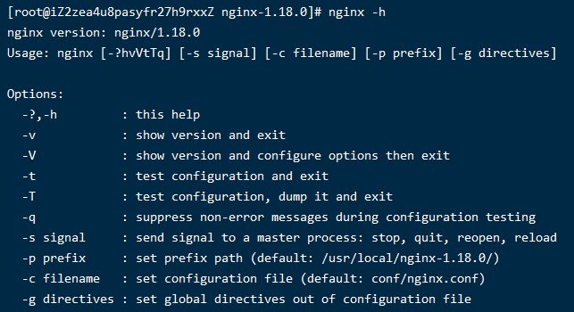

005-nginx的命令
通过 nginx -h 可以查看支持的命令

1、nginx -s命令
nginx自带命令，实现的效果和前面讲的信号量作用一样
nginx -s stop: 等同于kill -intnginx -s quit: 等同于kill -quitnginx -s reopen: 等同于kill -usr1nginx -s reload: 等同于kill -hup
2、nginx -t命令
检查 nginx.conf 配置是否正确
3、nginx -v命令
查看nginx的版本号
4、nginx -V命令
查看nginx的版本号以及当初编译执行configure的时候所带的参数